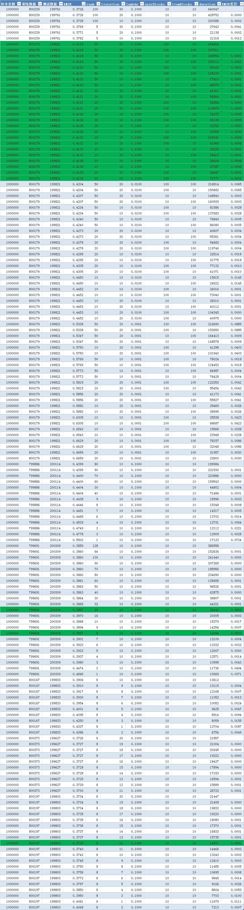

spark-tips
记录使用spark的过程中一些技巧、方法、注意事项。
executor-cores/executor-memory对执行效率的影响
环境：1 master/4 workers（12核，32G内存，其中spark可用资源为12核，16G内存）
程序说明：对约3000万行游戏数据进行ALS模型训练，并对所有用户（约600万）预测200款游戏的评分，最后取出每个用户20款评分最高的游戏进行推荐。
效率测试过程：
1.executor-cores 12, executor-memory 16g
这种配置下，一共会启用4个executor，共使用48 cores, 64G内存。
开始时间：16/09/22 16:06:32
结束时间：16/09/22 18:05:01
耗时：7109s = 118.5m
2.executor-cores 3, executor-memory 4g
这种配置下，一共会启用16个executor，共使用48 cores, 64G内存。
开始时间：2016/9/22 23:00:02
结束时间：2016/9/23 0:50:11
耗时：6609s = 110.15m
3.executor-cores 1, executor-memory 2g, total-executor-cores 16
这种配置下，一共会启用16个executor，共使用16 cores, 32G内存，可以结余出资源供其他程序使用。
开始时间：2016/9/22 18:32:17
结束时间：2016/9/22 21:21:47
耗时：10170s = 169.5m
结论：1.使用所有资源，其效率比使用部分资源效率要高，但并不能成比例增长；2.增加executor个数可稍微提升执行效率。PS: 由于集群规模有限，所得到的信息也相对有限，因此，针对不同集群规模，需做相应的测试，不可直接套用此结论。
scala.MatchError, GenericRowWithSchema
在评估ALS模型时，需要将predictions中的内容全部取出来计算方差和标准差，而在提取每行内容时，遇到错误如下：1
16/09/29 10:40:59 WARN scheduler.TaskSetManager: Lost task 2.0 in stage 103.0 (TID 492, bis-newdatanode-s2b-67): scala.MatchError: [0.0013,0.018407427] (of class org.apache.spark.sql.catalyst.expressions.GenericRowWithSchema)
提示说明类型不匹配，查看我的代码：1
2
3
4
5
6val predictions = model.transform(test).cache()
val mse = predictions.select("rating", "prediction").rdd.flatMap {
case Row(rating: Double, prediction: Double) =>
...
...
}
进一步查看transform方法：1
2
3
4
5
6
7
8
9
10
11
12
13
14
15
16override def transform(dataset: DataFrame): DataFrame = {
// Register a UDF for DataFrame, and then
// create a new column named map(predictionCol) by running the predict UDF.
val predict = udf { (userFeatures: Seq[Float], itemFeatures: Seq[Float]) =>
if (userFeatures != null && itemFeatures != null) {
blas.sdot(rank, userFeatures.toArray, 1, itemFeatures.toArray, 1)
} else {
Float.NaN
}
}
dataset
.join(userFactors, dataset($(userCol)) === userFactors("id"), "left")
.join(itemFactors, dataset($(itemCol)) === itemFactors("id"), "left")
.select(dataset("*"),
predict(userFactors("features"), itemFactors("features")).as($(predictionCol)))
}
说明rating字段类型，与传入参数test中的rating字段类型一致，而prediction字段类型，是由blas.sdot()函数决定的，查看该函数：1
abstract public float sdot(int n, float[] sx, int incx, float[] sy, int incy);
其返回值是float型，因此，将提取行数据的代码修改为：1
case Row(rating: Double, prediction: Float) =>
ALS模型评估
为了评估各参数对ALS模型的准确性及其性能的影响，进行了100多次的训练和测试，计根据模型预测结果与真实结果比较，计算其标准差来作为判断准确性的依据。
样本条数：100万。
评估结果(ALS评估.xlsx)如下：

使用训练数据预测并计算RMSE：
使用测试数据预测并计算RMSE：
结论：对于相同的数据集，其rank、iteration取值越大，RMSE越小，rank大于8、iteration大于12后，RMSE变化不再明显； 对于训练数据，其lambda值取0.0001时，有较小的RMSE，而对于测试数据，lambda取值0.1具有较小的RMSE；因此，取rank=8, iteration = 12, lambda = 0.1。
注意：不同数据集需做不同的评估，以得出合适的参数值。
scala list reduce与 spark rdd reduce比较
有同事指出scala的List做减法其多次运行结果不一致，超出了我的认知范围，特做如下实验：
List的reduce做减法，多次运行结果如下：
1 | scala> val list=List(1,2,3) |
RDD的reduce做减法：
在一个分区的情况下，多次运行，其结果如下：
1 | scala> val rdd = sc.parallelize(list, 1) |
在多（3）个分区的情况下，多次运行，其结果如下：
1 | scala> val rdd = sc.parallelize(list, 3) |
结论：scala下reduce做减法其结果是幂等，在spark下，当rdd的分区只有一个时，reduce的结果也是幂等的，而当rdd有多个分区时，reduce做减法其结果是不一致的。